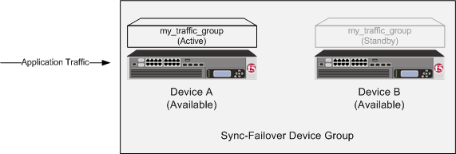
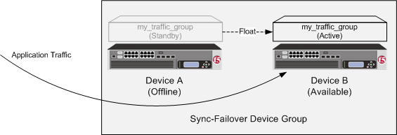
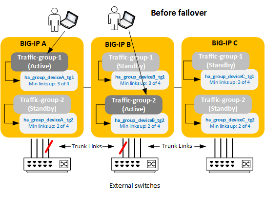
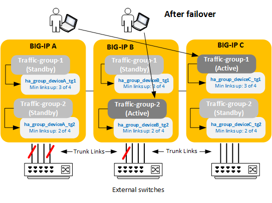

Updated Date: 07/07/2026
Managing Failover
When you configure a Sync-Failover device group as part of device service clustering (DSC®), you ensure that a user-defined set of application-specific IP addresses, known as a floating traffic group, can fail over to another device in that device group if necessary. DSC failover gives you granular control of the specific configuration objects that you want to include in failover operations.
If you want to exclude certain devices on the network from participating in failover operations, you simply exclude them from membership in that particular Sync-Failover device group.
The BIG-IP system initiates failover of a traffic group according to any of several events that you define. These events fall into these categories:
- System fail-safe
- With system fail-safe, the BIG-IP system monitors various hardware components, as well as the heartbeat of various system services. You can configure the system to initiate failover whenever it detects a heartbeat failure.
- Gateway fail-safe
- With gateway fail-safe, the BIG-IP system monitors traffic between an active BIG-IP® system in a device group and a pool containing a gateway router. You can configure the system to initiate failover whenever some number of gateway routers in a pool of routers becomes unreachable.
- VLAN fail-safe
- With VLAN fail-safe, the BIG-IP system monitors network traffic going through a specified VLAN. You can configure the system to initiate failover whenever the system detects a loss of traffic on the VLAN and the fail-safe timeout period has elapsed.
- HA groups
- With an HA group, the BIG-IP system monitors the availability of resources for a specific traffic group. Examples of resources are trunk links, pool members, and VIPRION® cluster members. If resource levels fall below a user-defined level, the system triggers failover.
- Auto-failback
- When you enable auto-failback, a traffic group that has failed over to another device fails back to a preferred device when that device is available. If you do not enable auto-failback for a traffic group, and the traffic group fails over to another device, the traffic group remains active on that device until that device becomes unavailable.
Part of configuring a Sync-Failover device group is configuring failover. Configuring failover requires you to specify certain types of IP addresses on each device. Some of these IP addresses enable continual, high availability (HA) communication among devices in the device group, while other addresses ensure that application traffic processing continues when failover occurs.
The IP addresses that you need to specify as part of HA configuration are:
- A local, static self IP address for VLAN
HA - This unicast self IP address is the main address that other devices in the device group use to communicate continually with the local device to assess the health of that device. When a device in the device group fails to receive a response from the local device, the BIG-IP system triggers failover.
- A local management IP address
- This unicast management IP address serves the same purpose as the static self IP address for VLAN
HA, but is only used when the local device is unreachable through theHAstatic self IP address. - One or more floating IP addresses associated with a traffic group
- These are the IP addresses that application traffic uses when passing through a BIG-IP system. Each traffic group on a device includes application-specific floating IP addresses as its members. Typical traffic group members are: floating self IP addresses, virtual addresses, NAT or SNAT translation addresses, and IP addresses associated with an iApp application service. When a device with active traffic groups becomes unavailable, the active traffic groups become active on other device in the device group. This ensures that application traffic processing continues with little to no interruption.
You perform this task to specify the local IP addresses that you want other devices in the device group to use for continuous health-assessment communication with the local device. You must perform this task locally on each device in the device group.
Note: The IP addresses that you specify must belong to route domain 0.
-
Confirm that you are logged in to the device you want to configure.
-
On the Main tab, click Device Management > Devices.
This displays a list of device objects discovered by the local device.
-
In the Name column, click the name of the device to which you are currently logged in.
-
Near the top of the screen, click Failover Network.
-
Click Add.
-
From the Address list, select an IP address.
The unicast IP address you select depends on the type of device:
Platform Action Appliance without vCMP Select a static self IP address associated with a VLAN on the internal network (preferably VLAN HA) and the static management IP address or addresses currently assigned to the device. If the system is configured with both IPv4 and IPv6 management IP addresses, then by default, the system will use either of these addresses for failover communication if needed, for failover communication between devices.Appliance with vCMP Select a static self IP address associated with a VLAN on the internal network (preferably VLAN HA) and the unique management IP address currently assigned to the guest. If a guest is configured with both IPv4 and IPv6 cluster management IP addresses, then by default, the system will use either of these addresses for failover communication if needed, for failover communication between devices.VIPRION without vCMP Select a static self IP address associated with a VLAN on the internal network (preferably VLAN HA). If you choose to select unicast addresses only (and not a multicast address), you must also specify the existing per-slot static management IP address or addresses (IPv4, IPv6, or both) that you previously configured for each slot in the cluster. If you choose to select one or more unicast addresses and a multicast address, then you do not need to select the existing per-slot, static management IP addresses when configuring addresses for failover communication.VIPRION with vCMP On the vCMP host, select a self IP address that is defined on the guest and associated with a VLAN on the internal network (preferably VLAN HA). If you choose to select unicast failover addresses only (and not a multicast address), you must also select the existing per-slot virtual static management IP address or addresses (IPv4, IPv6, or both) that you previously configured for each slot in the guest’s virtual cluster. If you choose to select one or more unicast addresses and a multicast address, you do not need to select the existing per-slot virtual static, management IP addresses when configuring addresses for failover communication.Important: Failover addresses should always be static, not floating, IP addresses.
-
From the Port list, select a port number.
We recommend using port 1026 for failover communication.
-
To enable the use of a failover multicast address on a VIPRION platform (recommended), then for the Use Failover Multicast Address setting, select the Enabled check box.
-
If you enabled Use Failover Multicast Address, either accept the default Address and Port values, or specify values appropriate for the device.
If you revise the default Address and Port values, but then decide to revert to the default values, click Reset Defaults.
-
Click Finished.
After you perform this task, other devices in the device group can send failover messages to the local device using the specified IP addresses.
Traffic groups are the core component of failover. A traffic group is a collection of related configuration objects, such as a floating self IP address, a floating virtual IP address, and a SNAT translation address, that run on a BIG-IP® device. Together, these objects process a particular type of application traffic on that device.
When a BIG-IP® device goes offline, a traffic group floats (that is, fails over) to another device in the device group to make sure that application traffic continues to be processed with minimal interruption in service.
A traffic group is first active on the device you created it on. If you want an active traffic group to be active on a different device than the one you created it on, you can force the traffic group to switch to a standby state. This causes the traffic group to fail over to (and become active on) another device in the device group. The device it fails over to depends on how you configured the traffic group when you created it.
Note: A Sync-Failover device group can support a maximum of 127 floating traffic groups.
Each new BIG-IP® device comes with two pre-configured traffic groups:
traffic-group-1- A floating traffic group that initially contains any floating self IP addresses that you create on the device. If the device that this traffic group is active on goes down, the traffic group goes active on another device in the device group.
traffic-group-local-only- A non-floating traffic group that contains the static self IP addresses that you configure for VLANs
internalandexternal. This traffic group never fails over to another device.
Any traffic group that you explicitly create on the BIG-IP® system is a floating traffic group. The types of configuration objects that you can associate with a floating traffic group are:
- Virtual IP addresses
- NATs
- SNAT translation addresses
- Self IP addresses
- Folders (such as an iApps® folder)
You can associate configuration objects with a traffic group in these ways:
- You can rely on the folders in which the objects reside to inherit the traffic group that you assign to the
rootfolder. - You can use the BIG-IP Configuration utility to directly associate a traffic group with an iApp application service, a virtual IP address, a NAT or SNAT translation address, or a floating self IP address.
- You can use the BIG-IP® Configuration utility to directly associate a traffic group with a folder.
Important: By default, floating objects that you create with the BIG-IP Configuration utility are associated with traffic-group-1. Non-floating objects are associated with traffic-group-local-only. You can change these associations by using the BIG-IP Configuration utility to change the traffic group that is associated with each floating IP address on the system.
Note: The only non-floating traffic group that resides on the system is the default non-floating traffic group named traffic-group-local-only.
The following considerations apply to traffic groups:
- On each device in a Sync-Failover device group, the BIG-IP® system automatically assigns the default floating traffic group name to the
rootand/Commonfolders. - The BIG-IP system creates all traffic groups in the
/Commonfolder, regardless of the partition to which the system is currently set. - Any traffic group named other than
traffic-group-local-onlyis a floating traffic group. - You can specify a floating traffic group on a folder only when the device group that is set on the folder is a Sync-Failover type of device-group.
- You can set a floating traffic group on only those objects that reside in a folder with a device group of type Sync-Failover.
- Setting the traffic group on a failover object to
traffic-group-local-onlyprevents the system from synchronizing that object to other devices in the device group.
If you intend to specify a MAC masquerade address when creating a traffic group, you must first create the address, using an industry-standard method for creating a locally administered MAC address.
Perform this task when you want to create a traffic group for a BIG-IP device. You can perform this task on any BIG-IP device within the device group, and the traffic group becomes active on the local device.
Important: This procedure creates a traffic group with no members. After creating a traffic group, you must associate the traffic group with specific floating IP addresses such as a self IP address and a virtual address.
-
On the Main tab, click Device Management > Traffic Groups.
-
On the Traffic Groups screen, click Create.
-
In the Name field, type a name for the new traffic group.
-
In the Description field, type a description for the new traffic group.
For example, you can type
This traffic group manages failover for Customer B traffic. -
In the MAC Masquerade Address field, type a MAC masquerade address.
When you specify a MAC masquerade address, you reduce the risk of dropped connections when failover occurs. This setting is optional.
-
If you have created an HA group for monitoring trunk, pool, or VIPRION cluster resources and for creating an HA health score, then from the HA Group list, select the HA group name.
This setting is optional.
-
From the Failover Method list, select a failover method:
- Choose Failover to Device With Best HA Score when you want the BIG-IP system to choose the next-active device based on an HA health score for the device. You can only choose this option when you have configured the HA Group setting to assign an existing HA group to this traffic group.
- Choose Failover using Preferred Device List and then Load Aware when you want the BIG-IP system to choose the next-active device based on either an ordered list of devices or relative traffic group load.
-
If you configured the Failover Methods setting with a value of Failover using Preferred Device List and then Load Aware, then configure the following settings. Otherwise, skip this step.
-
Select or clear the check box for the Auto Failback option.
-
If Auto Failback is selected, then in the Auto Failback Timeout field, type the number of seconds that you want the system to wait before failing back to the specified device. The range in seconds is from
0to300. The default is60. A value of40to60seconds allows for state mirroring information to be re-mirrored for traffic groups. -
For the Failover Order setting, in the Load Aware box, select a device name and, using the Move button, move the name to the Preferred Order box. Repeat for each device that you want to include in the ordered list.
This setting is optional. Only devices that are members of the relevant Sync-Failover device group are available for inclusion in the ordered list. If you have enabled the auto-failback feature on the traffic group, ensure that the first device in the ordered list is the device to which you want this traffic group to fail back to when that first device becomes available.
If auto-failback is enabled and the first device in the Preferred Order list is unavailable, no auto-failback occurs and the traffic group continues to run on the current device. Also, if none of the devices in the list is currently available or there are no devices in the list when failover occurs, BIG-IP system performs load-aware failover instead, using the HA Load Factor setting.
-
In the HA Load Factor field, specify a value that represents the application load for this traffic group relative to other active traffic groups on the local device.
The BIG-IP system uses this value whenever it performs load-aware failover.
Important: If you configure this setting, you must configure the setting on every traffic group in the device group.
-
-
Click Finished.
You now have a floating traffic group with zero members
After creating the traffic group, you must add members to it. Possible members are floating IP addresses such as self IP addresses, virtual addresses, NAT or SNAT translation addresses, and iApp application services. Also, if you want the traffic group to become active on a device other than this local device, you can use the Force to Standby button. By forcing the traffic group into a standby state on the local device, you cause the traffic group to become active on another device.
Before performing this task, verify that the traffic group exists on the BIG-IP system.
You perform this task to add members to a newly-created or existing traffic group. Traffic group members are the floating IP addresses associated with application traffic passing through the BIG-IP system. Typical members of a traffic group are: a floating self IP address, a floating virtual address, and a floating SNAT translation address.
-
From the Main tab, display the properties page for an existing BIG-IP object, such as a self IP address or a virtual address.
For example, from the Main tab, click Network > Self IPs, and then from the Self IPs list, click a self IP address.
-
From the Traffic Group list, select the floating traffic group that you want the BIG-IP object to join.
-
Click Update.
After performing this task, the BIG-IP object belongs to the selected traffic group.
Repeat this task for each BIG-IP object that you want to be a member of the traffic group.
You can view a list of traffic groups for the device group. Using this list, you can add floating IP addresses to a traffic group, force a traffic group into a Standby state, and view information such as the current and next-active devices for a traffic group and its HA load factor.
-
On the Main tab, click Device Management > Traffic Groups.
-
In the Name column, view the names of the traffic groups on the local device.
You can use the BIG-IP Configuration utility to view a list of all failover objects associated with a specific traffic group. For each failover object, the list shows the name of the object, the type of object, and the folder in which the object resides.
-
On the Main tab, click Device Management > Traffic Groups.
-
In the Name column, click the name of the traffic group for which you want to view the associated objects.
This displays a list of all failover objects for the traffic group.
This table lists and describes the properties of a traffic group.
| Property | Description |
|---|---|
| Name | The name of the traffic group, such as traffic-group-1. |
| Partition | The name of the folder or sub-folder in which the traffic group resides. |
| Description | A user-defined description of the traffic group. |
| MAC Masquerade Address | A user-created MAC address that floats on failover, to minimize ARP communications and dropped connections. |
| Current Device | The device on which a traffic group is currently running. |
| Next Active Device | The device currently most available to accept a traffic group if failover of that traffic group should occur. |
| HA Group | The HA group that you created and assigned to this traffic group. (This setting is optional.) |
| HA Group Status | Indicates whether an HA group is enabled for this traffic group. |
| Failover Method | The possible failover methods to configure: Failover to Device With Best HA Score and Failover using Preferrred Device Order and then Load Aware. This property also shows whether auto-failback is enabled for this traffic group. |
| Failover Order | An ordered list of devices that the BIG-IP system uses to determine the next-active device for the traffic group. |
| HA Load Factor | A numeric value pertaining to load-aware failover that represents the application traffic load of this traffic group relative to other active traffic groups on the same device. |
On each device, a particular floating traffic group is in either an active state or a standby state. In an active state, a traffic group on a device processes application traffic. In a standby state, a traffic group on a device is idle.
For example, on Device A, traffic-group-1 might be active, and on Device B, traffic-group-1 might be standby. Similarly, on Device B, traffic-group-2 might be active, and on Device A, traffic-group-2 might be standby.
When a device with an active traffic group becomes unavailable, the traffic group floats to (that is, becomes active on) another device. The BIG-IP® system chooses the target device for failover based on how you initially configured the traffic group when you created it. Note that the term floats means that on the target device, the traffic group switches from a standby state to an active state.
The following illustration shows a typical device group configuration with two devices and one traffic group (named my_traffic_group). In this illustration, the traffic group is active on Device A and standby on Device B prior to failover.

If failover occurs, the traffic group becomes active on the other device. In the following illustration, Device A has become unavailable, causing the traffic group to become active on Device B and process traffic on that device.

When Device A comes back online, the traffic group becomes standby on DeviceA.
A device group that contains only one floating traffic group is known as an active-standby configuration.
A device group that contains two or more floating traffic groups is known as an active-active configuration. You can then choose to make all of the traffic groups active on one device in the device group, or you can balance the traffic group load by making some of the traffic groups active on other devices in the device group.
You can use the BIG-IP Configuration utility to view the current failover state of a device in a device group. An Active failover state indicates that at least one traffic group is currently active on the device. A Standby failover state indicates that all traffic groups on the device are in a Standby state.
-
Display any screen of the BIG-IP Configuration utility.
-
In the upper left corner of the screen, view the failover state of the device.
You can use the BIG-IP Configuration utility to view the current state of all traffic groups on the device.
-
On the Main tab, click Device Management > Traffic Groups.
-
In the Failover Status area of the screen, view the state of all traffic groups on the device.
You perform this task when you want the selected traffic group on the local device to fail over to another device (that is, switch to a Standby state). Users typically perform this task when no automated method is configured for a traffic group, such as auto-failback or an HA group. By forcing the traffic group into a Standby state, the traffic group becomes active on another device in the device group. For device groups with more than two members, you can choose the specific device to which the traffic group fails over.
-
Log in to the device on which the traffic group is currently active.
-
On the Main tab, click Device Management > Traffic Groups.
-
In the Name column, locate the name of the traffic group that you want to run on the peer device.
-
Select the check box to the left of the traffic group name.
If the check box is unavailable, the traffic group is not active on the device to which you are currently logged in. Perform this task on the device on which the traffic group is active.
-
Click Force to Standby.
This displays target device options.
-
Choose one of these actions:
- If the device group has two members only, click Force to Standby. This displays the list of traffic groups for the device group and causes the local device to appear in the Next Active Device column.
- If the device group has more than two members, then from the Target Device list, select a value and click Force to Standby.
The selected traffic group is now in a standby state on the local device and active on another device in the device group.
Sometimes a traffic group within a BIG-IP® Sync-Failover device group needs a certain number of resources to be up – resources like pool members, trunk links, VIPRION ®cluster members, or some combination of these.
With HA groups, you can define the minimum number of resources that a traffic group needs for it to stay active on its current device. If resources fall below that number, the traffic group fails over to a device with more resources. An HA group:
- Monitors resource availability on current and next-active devices for an active traffic group
- Calculates an HA “resource” score on each device for choosing the next-active device
Note: For an HA group to prevent a traffic group from failing over, all of the resource types that you specify in an HA group must meet the defined minimum thresholds for availability.
You use this task to create an HA group for a traffic group on a device in a BIG-IP device group. An HA group is most useful when you want an active traffic group on a device to fail over to another device based on trunk and pool availability, and on VIPRION systems, also cluster availability. You can create multiple HA groups on a single BIG-IP device, and you associate each HA group with the local instance of a traffic group.
Important: Once you create an HA group on one device and associate the HA group with a traffic group, you must create an HA group on every other device in the device group and associate it with that same traffic group.
-
Log in to a device in the device group (such as
BIG-IP A), using the device’s management IP address.The login screen of the BIG-IP Configuration utility opens.
-
On the Main tab, click System > High Availability > HA Groups
-
Click Create.
-
In the HA Group Name field, type a name such as
ha_group_deviceA_tg1. -
In the Active Bonus field, keep the default value.
The purpose of the active bonus is to boost the HA score to prevent failover when minor or frequent changes occur to the availability of a pool, trunk, or cluster.
-
In the Pools area of the screen, click Add.
If the Add button is grayed out, there are no pools on the BIG-IP system.
The Add Pool to HA Group dialog box appears.
-
From the Pool list, select a pool name.
-
Using the drop-down list, select the minimum number of active pool members required for this device to process traffic.
This value is the minimum number of pool members that you want to be up in order for the active instance of a specific traffic group to remain on its current device. You will assign this HA group to the traffic group later.
-
In the weight field, retain the default value or type a value and for the number of active pool members that are sufficient to be up for calculating the weight, select a value.
For example, if the total number of pool members is 6, but the value of the Sufficient Threshold setting is 4 and there are only two pool members currently available, the BIG-IP system calculates the score by multiplying the weight you configured for the pool by the percentage of pool members available as compared to the sufficient value, not to the total number of pool members. If the weight we configure for the pool is 50, and 50% of the pool members are up (2 of 4), then the HA score calculation for the pool is 50 x 50% = 25.
-
Click Add.
This displays the New HA Group screen and shows the pool member criteria that must be met to prevent the traffic group from failing over.
-
In the Trunks area of the screen, click Add.
If the Add button is grayed out, there are no trunks on the BIG-IP system.
The Add Trunk to HA Group dialog box appears.
-
From the Trunk list, select a trunk name.
-
Using the drop-down list, select a minimum number of active links required for this device to process traffic, which in our example, is 3.
This value is the minimum number of trunk links that you want to be up in order for
traffic-group-1to remain on its current device. You will assign this HA group to the traffic group later. -
For the weight field, type a value such as
50, and for the number of active trunk links that are sufficient to be up for calculating the weight, select a value such as 3.For example, if the total number of trunk links is 4, but the value of the Sufficient Threshold setting is 3 and there are only two links currently available, the BIG-IP system calculates the score by multiplying the weight you configured for the trunk by the percentage of links available as compared to the sufficient value, not to the total number of links. If the weight we configure for the trunk is 50, and 66% of the links are up (2 of 3), then the HA score calculation for the trunk is 50 x 66% = 33.
-
Click Add.
This displays the New HA Group screen and shows the trunk member criteria that must be met to prevent the traffic group from failing over.
-
Click Create HA Group.
-
Log in to each of the remaining devices in the device group and repeat this task, giving each HA group a unique name.
You can use the same weights and resource criteria within each HA group that you specified for this HA group.
For example, on
Device_A, if you createHA_GroupA_TG1and associate it withtrafffic-group-1, then onDevice_Byou can createHA_GroupB_TG1) and also associate it withtraffic-group-1.
You now have an HA group that the BIG-IP system can use to trigger failover for whatever traffic group instance you assign this HA group to. If you intend to configure the traffic group to select the next-active device based on an HA score, this HA group will calculate an HA score for this device.
After creating an HA group on the local device, you must assign it to a traffic group on the local device.
You use this task to associate an HA group with an existing traffic group. You associate an HA group with a traffic group when you want the traffic group to fail over to another device in the device group due to issues with trunk, pool, and/or VIPRION cluster availability. Once a BIG-IP device determines through this association that an active traffic group should fail over, the system chooses the next-active device, according to the failover method that you configure on the traffic group: An ordered list of devices, load-aware failover based on device capacity and traffic load, or the HA score derived from the HA group configuration.
Important: HA groups are not included in config sync operations. For this reason, you must associate a different HA group on every device in the device group for this traffic group. For example, if the device group contains three devices and you want to create an HA group for traffic-group-1, you must associate a different HA group for traffic-group-1 on each of the three devices separately. In a typical device group configuration, the values of the HA group settings on the traffic group will differ on each device.
-
On the Main tab, click Device Management > Traffic Groups.
-
In the Name column, click the name of a traffic group on the local device.
This displays the properties of the traffic group.
-
From the HA Group list, select an HA group.
-
Click Update.
After you perform this task for the same traffic group on each device group member, the BIG-IP system ensures that the traffic group, when active, will fail over to another device when a configured number of trunk links, pool members, or VIPRION cluster members becomes unavailable.
This illustration shows three sample devices with two active traffic groups. We’ve configured both traffic groups to use HA groups to define acceptable criteria for trunk health. Although it’s not shown here, we’ll assume that traffic-group-1 and traffic-group-2 use the HA score and the Preferred Device Order failover methods, respectively, to pick their next-active devices.

In our example, we see that on both BIG-IP A and BIG-IP B, three of four trunk links are currently up, which meets the minimum criteria specified in the HA groups assigned to traffic-group-1 and traffic-group-2 on those devices. This allows each traffic group to stay active on its current device.
Now suppose that the trunk on BIG_IP A loses another link. We see that even though BIG-IP A is still up, traffic-group-1 has failed over because BIG-IP A no longer meets the HA group criteria for hosting the traffic group: only two of four trunk links are now up on that device.

Because we’ve configured traffic-group-1 to use HA scores to select the next-active device, the traffic group fails over to BIG-IP C, because this is the device with the most trunk links up and therefore has the highest HA score for hosting this traffic group.
As for traffic-group-2, it stays on its current device because BIG-IP B still meets the minimum criteria specified in its HA group.
For every active traffic group in your device group, the BIG-IP® Configuration utility displays the current device, meaning the device that a traffic group is currently active on.
The BIG-IP® system can also tell you the device that is to be the next-active device. The next-active device is the device that the traffic group will fail over to if the traffic group has to fail over for some reason.
The device labeled as next-active for a traffic group can change at any time, depending on:
- Which devices are currently available in the device group
- Which device is best able to take on extra traffic group load
- Which device has the most available trunk, pool, or VIPRION® cluster members (if you’re using the HA groups feature)
You can tell the BIG-IP system how to choose a next-active device for a traffic group by configuring the traffic group’s failover method. The available failover methods are Failover to Device With Best HA Score and Failover using Preferred Device Order and then Load Aware.
An HA score is a numeric value that the BIG-IP® system calculates independently for each instance of a particular traffic group, when you have assigned an HA group to each traffic group instance. For each traffic group instance, the HA group’s monitoring function determines the availability of certain resources such as trunk links, pool members, or VIPRION® cluster members.
The BIG-IP system uses these per-instance scores to decide which device has the most resources that the traffic group needs, such as trunk links or pool members. The higher the score for a traffic group instance, the higher the availability of needed resources.
You must have an HA group assigned to each instance of the same traffic group in order for the system to calculate an HA score. An HA score is calculated based on how the corresponding HA group is configured. Whenever the HA group for the active traffic group decides to trigger failover, the traffic group automatically fails over to the device with the highest score.
To get the BIG-IP to base the selection of a traffic group’s next-active device on an HA score, you configure the Failover to Device with Best HA Score Failover Method setting on a floating traffic group.
The BIG-IP® system calculates an HA health score per traffic group on a device, based on weight, minimum threshold, sufficient threshold, and active bonus values that you specify when you configure an HA group.
An HA group is a sum of the components (trunk(s), pool(s), cluster member(s)). If the minimum (defined by the ‘minimum-threshold’) is violated for any component, then the total HA Group score is set to 0. If a component value is 0 because it has 0 members (but also has a minimum-threshold equal to 0), then the group is summed normally.
For example: A customer configured an HA-group on two trunks with a single member each, where each trunk weight is 50, when both trunks are up the score is 100 (excluding active-bonus); however when a single trunk fails, the whole score goes to 0, and the unit fails over. The minimum-threshold was set to 1 for trunks in the HA Group.
By setting the minimum threshold to 0 for this case: root@(bigip12-ve)(cfg-sync In Sync)(Standby)(/Common)(tmos)# modify sys ha-group HA-GROUP trunks modify { all { minimum-threshold 0} }
Now when one trunk fails, there is still one trunk up and with the minimum threshold equal to 0, the group score is not set to 0. The score for the group is the sum of the one trunk, which is 50.
A weight is a health value that you assign to each member of the HA group (that is, a pool, trunk, and/or VIPRION® cluster). The weight that you assign to each HA group member must be in the range of 10 through 100.
The maximum overall weight that the BIG-IP system can potentially calculate is the sum of the individual weights for the HA group members, plus the active bonus value. There is no limit to the sum of the member weights for the HA group as a whole.
For each member of an HA group, you can specify a setting known as a minimum threshold. A minimum threshold is a value that specifies the number of object members that must be available to prevent failover. The system factors in a threshold value when it calculates the overall score for the traffic group or device.
The way that the BIG-IP system calculates the score depends on the number of object members that are actually available as compared to the configured minimum threshold value:
-
If the number of available object members is less than the threshold, the BIG-IP system assigns a score of 0 to the HA group member so that the score of that HA group member no longer contributes to the overall score.
For example, if a trunk in the HA group has four trunk members and you specify a minimum threshold value of 3, and the number of available trunk members falls to 2, then the trunk contributes a score of 0 to the total score for the traffic group or device.
-
If the number of available object members equals or exceeds the minimum threshold value, or you do not specify a minimum threshold, the BIG-IP system calculates the score as described previously, by multiplying the percentage of available object members by the weight for each HA group member and then adding the scores to determine the overall score for the traffic group or device.
The minimum threshold that you define for pools can be less than or equal to the number of members in the pool. For clusters, the threshold can be less than or equal to the number of possible blades in the chassis, and for trunks, the minimum threshold can be less than or equal to the number of possible members in a trunk for that platform.
Tip: Do not configure the tmsh attribute min-up-members on any pool that you intend to include in the HA group.
When you’ve configured the BIG-IP® system to use HA scores to pick the next-active device for a traffic group, the traffic group will fail over whenever another device has a higher score for that same traffic group. This means that an active traffic group could potentially fail over frequently because it will fail over even when its HA group’s minimum threshold value is still met.
To mitigate this problem, you can define a sufficient threshold value. The sufficient threshold value specifies the amount of available resource (of a trunk, pool, or cluster) that is considered good enough to prevent the traffic group from failing over when another device has a higher score.
The default value for the Sufficient Threshold setting is All, which means that the system considers the amount of available resource to be sufficent when all of its component members are available. For example, if a trunk has a total of four links, and you specify the default sufficient threshold value, then all of the trunk links must be up to prevent failover when another device has a higher HA score. If you specify a sufficient threshold of 3, then only three of the four trunk links must be up to prevent failover when another device has a higher HA score.
An active bonus is an amount that the BIG-IP system automatically adds to the overall HA score of an active traffic group or device. An active bonus ensures that the traffic group or device remains active when its score would otherwise temporarily fall below the score of the standby traffic group on another device. The active bonus that you configure can be in the range of 0 to 100.
A common reason to specify an active bonus is to prevent failover due to flapping, the condition where failover occurs frequently as a trunk member switches rapidly between availability and unavailability. In this case, you might want to prevent the HA scoring feature from triggering failover each time a trunk member is lost. You might also want to prevent the HA scoring feature from triggering failover when you make minor changes to the BIG-IP system configuration, such as adding or removing a trunk member.
For example, suppose that the HA group for a traffic group on each device contains a trunk with four members, and you assign a weight of 30 to each trunk. Without an active bonus defined, if the trunk on one device loses some number of members, failover occurs because the overall calculated score for that traffic group becomes lower than that of a peer device. You can prevent this failover from occurring by specifying an active bonus value.
The BIG-IP system uses an active bonus to contribute to the HA score of an active traffic group only; the BIG-IP system never uses an active bonus to contribute to the score of a standby traffic group.
Note: An exception to this behavior is when the active traffic group score is 0. In this case, the system does not add the active bonus to the active traffic group or active device score.
To decide on an active bonus value, calculate the trunk score for some number of failed members (such as one of four members), and then specify an active bonus that results in a trunk score that is greater than the weight that you assigned to the trunk.
For example, if you assigned a weight of 30 to the trunk, and one of the four trunk members fails, the trunk score becomes 23 (75% of 30), putting the traffic group at risk for failover. However, if you specified an active bonus of 8 or higher, failover would not actually occur, because a score of 8 or higher, when added to the score of 23, is greater than 30.
This example illustrates the way that HA group configuration results in the calculation of an HA health score for a traffic group on a specific device. Suppose that you previously created an HA group for traffic-group-1 on all device group members and that traffic-group-1 is currently active on device Bigip_A. Also suppose that on device Bigip_B, the HA group for traffic-group-1 consists of two pools and a trunk, with weights that you assign:
| HA group object | Member count | User-specified weight |
|---|---|---|
http_pool |
8 | 50 |
ftp_pool |
6 | 20 |
trunk1 |
4 | 30 |
Now suppose that on device Bigip_B, the current member availability of pool http_pool, pool ftp_pool, and trunk trunk1 is 5, 6, and 3, respectively. The resulting HA score that the BIG-IP system calculates for traffic-group-1 on Bigip_B is shown here:
| HA group object | Member count | Available member count | User-specified weight | Current HA score |
|---|---|---|---|---|
http_pool |
8 | 5 (62.5%) | 50 | 31 (60% x 50) |
ftp_pool |
6 | 6 (100%) | 20 | 20 (100% x 20) |
trunk1 |
4 | 3 (75%) | 30 | 23 (75% x 30) |
| Total score: 74 |
In this example, the total HA score for traffic-group-1 on Bigip_B is currently 74. If this score is currently the highest score in the device group for traffic-group-1, then traffic-group-1 will automatically failover and become active on Bigip_B.
In rare cases, the BIG-IP system might calculate that two or more traffic groups have the same HA score. In this case, the BIG-IP system needs an additional method for choosing the next-active device for an active traffic group.
The way that the BIG-IP system chooses the next-active device when HA health scores match is by determining the management IP address of each matching device and then calculating a score based on the highest management IP address of those devices.
For example, if Bigip_A has an IP address of 192.168.20.11 and Bigip_B has an IP address of 192.168.20.12, and their HA scores match, the BIG-IP system calculates a score based on the address 192.168.20.12.
A Preferred Device Order list is a static list of devices that you can assign to a floating traffic group as a way for the BIG-IP ®system to choose the next-active device. The list tells the BIG-IP system the order to use when deciding which device to designate as the next-active device for the traffic group.
You create a preferred device order list by configuring the traffic group’s Failover Method setting and choosing Failover using Preferred Device Order and then Load Aware. For example, for traffic-group-1, if you create a list that contains devices BIG-IP A, BIG-IP B, and BIG-IP C, in that order, the system checks to see if BIG-IP A is up and if so, designates BIG-IP A as the target device for traffic-group-1. If the system sees that BIG-IP A is down, it checks BIG-IP B to see if it’s up, and if so, designates BIG-IP B as the target failover device for the traffic group, and so on.
If you assigned an HA group to the traffic group, the BIG-IP system not only selects the next-active device by checking to see if a device in the list is up, but also whether the device’s trunk, pool, or cluster resources meet the minimum criteria defined in the HA group. In this case, if a device’s resources don’t meet the minimum criteria (and therefore it’s HA score is zero), the system will not designate that device as the next-active device and will check the next device in the list.
If the preferred device order list is empty or if none of the devices in the list is available, the BIG-IP system switches to using the load-aware failover method to choose the next-active device.
Note: When you enable the auto-failback feature for a traffic group, the BIG-IP system tries to ensure that the traffic group is always active on the first device in the list. If the first device in the list is unavailable, no fail-back occurs.
The failover feature includes an option known as auto-failback. When you enable auto-failback, a traffic group that has failed over to another device fails back to a preferred device when that device is available. If you do not enable auto-failback for a traffic group, and the traffic group fails over to another device, the traffic group remains active on the new device until that device becomes unavailable.
You can enable auto-failback on a traffic group only when you have configured an ordered list with at least one entry, for that traffic group. In this case, if auto-failback is enabled and the traffic group has failed over to another device, then the traffic group fails back to the first device in the traffic group’s ordered list (the preferred device) when that device becomes available.
Important: If the first device in the ordered list is unavailable, no fail-back occurs. The traffic group does not fail back to the next available device in the list and instead remains on its current device.
If a traffic group fails over to another device, and the new device fails before the auto-failback timeout period has expired, the traffic group will still fail back, to the original device if available. The maximum allowed timeout value for auto-failback is 300 seconds.
You perform this task to create a prioritized, ordered list for a floating traffic group. The BIG-IP system uses this list to determine the next-active device for this traffic group. This configuration option is most useful for device groups with homogeneous hardware platforms and similar application traffic loads, or for applications that require a specific target failover device, such as those that use connection mirroring. When failover occurs, the traffic group will fail over to the first available device in the list.
-
On the Main tab, click Device Management > Traffic Groups.
-
In the Name column, click the name of a traffic group on the local device.
This displays the properties of the traffic group.
-
For the Failover Method setting, choose Failover using Preferred Device Order and then Load Aware.
-
Select or clear the check box Always Failback to First Device if it is Available:
- Select the check box to cause the traffic group, after failover, to fail back to the first device in the traffic group’s ordered list when that device (and only that device) is available. If that device is unavailable, no failback occurs and the traffic group continues to run on the current device.
- Clear the check box to cause the traffic group, after failover, to remain active on its current device until failover occurs again.
-
If auto-failback is enabled, in the Auto Failback Timeout field, type the number of seconds that you want the system to wait before failing back to the specified device. The range is from 0 to 300 seconds. The default is
60. A value of40to60allows for state mirroring information to be re-mirrored for traffic groups. -
For the Failover Order setting, in the Load-Aware box, select a device name and using the Move button, move the device name to the Preferred Order box. Repeat for each device that you want to include in the ordered list.
This setting is optional. Only devices that are members of the relevant Sync-Failover device group are available for inclusion in the ordered list. If you have enabled the auto-failback feature on the traffic group, make sure that the first device in the ordered list is the device to which you want this traffic group to fail back to when that first device becomes available.
If none of the devices in the Preferred Order list is currently available when failover occurs, the BIG-IP system uses load-aware failover instead.
-
Click Update.
After you perform this task, the BIG-IP system designates the first available device that is highest in the ordered list as the next-active device for the traffic group. If you’ve assigned an HA group to the traffic group, the traffic group will fail over to the first available device in the list that has a non-zero HA score (that is, a device whose trunk, pool, or VIPRION cluster resources meet the minimum criteria specified in the HA group).
If you want the BIG-IP® system to base the next-active selection for a traffic group on application traffic load, you can use load-aware failover. Load-aware failover ensures that the traffic load on all devices in a device group is as equivalent as possible, factoring in any differences in the amount of application traffic that traffic groups process on a device. The load-aware configuration option is most useful for device groups with varying application traffic loads.
The BIG-IP system implements load-aware failover by calculating a utilization score for each device, based on numeric values that you specify for each traffic group relative to the other traffic groups in the device group. The system then uses this current score to determine which device is the best device in the group to become the next-active device when failover occurs for a traffic group.
Note: If you have varying hardware platforms in your device group, you can use tmsh to specify the relative capacity of each device, and this value factors into the score calculation along with the traffic load value. The tmsh command to do this is: modify /cm device *device\_name* ha-capacity*integer*.
The BIG-IP system on each device performs a calculation to determine the device’s current level of utilization. This utilization level indicates the ability for the device to be the next-active device in the event that an active traffic group on another device must fail over within a device group.
The calculation that the BIG-IP performs to determine the current utilization of a device is based on these factors:
- Active local traffic groups
- The number of active traffic groups on the local device.
- Active remote traffic groups
- The number of remote active traffic groups for which the local device is the next-active device.
- A load factor for each active traffic group
- A multiplier value for each traffic group. The system uses this value to weight each active traffic group’s traffic load compared to the traffic load of each of the other active traffic groups in the device group.
The BIG-IP system uses all of these factors to perform a calculation to determine, at any particular moment, a score for each device that represents the current utilization of that device. This utilization score indicates whether the BIG-IP system should, in its attempt to equalize traffic load on all devices, designate the device as a next-active device for an active traffic group on another device in the device group.
For each traffic group on a BIG-IP® device, you can assign an high availability (HA) load factor. An HA load factor is a number that represents the relative application traffic load that an active traffic group processes compared to other active traffic groups in the device group.
For example, if the device group has two active traffic groups, and one traffic group processes twice the amount of application traffic as the other, then you can assign values of 4 and 2, respectively. You can assign any number for the HA load factor, as long as the number reflects the traffic group’s relative load compared to the other active traffic groups.
User-specified values for the HA load factor can be based on different metrics. For example, suppose you have the three devices Bigip_A, Bigip_B, and Bigip_C, and each device has one active traffic group with an HA load factor of 2, 4, or 8 respectively. These values could indicate either of the following:
- If each traffic group contains one virtual address, then the sample factor values could indicate that the virtual server for
Bigip_Bprocesses twice the amount of traffic as that ofBigip_A, and the virtual server forBigip_Cprocesses twice the amount of traffic as that ofBigip_B. - If the traffic group on
Bigip_Acontains one virtual address, the traffic group onBigip_Bcontains two virtual addresses, and the traffic group onBigip_Ccontains four virtual addresses, this could indicate that the virtual servers corresponding to those virtual addresses each process the same amount of traffic compared to the others.
You perform this task when you want to specify the relative application load for an existing traffic group, for the purpose of configuring load-aware failover. Load-aware failover ensures that the BIG-IP system can intelligently select the next-active device for each active traffic group in the device group when failover occurs. When you configure load-aware failover, you define an application traffic load (known as an HA load factor) for a traffic group to establish the amount of computing resource that an active traffic group uses relative to other active traffic groups.
-
On the Main tab, click Device Management > Traffic Groups.
-
In the Name column, click the name of a traffic group.
This displays the properties of the traffic group.
-
From the Failover Method list, choose Failover using Preferred Device Order and then Load Aware.
This displays the HA Load Factor setting.
-
In the HA Load Factor field, specify a value that represents the application load for this traffic group relative to other active traffic groups on the local device.
Important: If you configure this setting, you must configure the setting on every traffic group in the device group.
-
Click Update.
After performing this task, the BIG-IP system uses the HA Load Factor value as a factor in calculating the current utilization of the local device, to determine whether this device should be the next-active device for failover of other traffic groups in the device group.
A MAC masquerade address is a unique, floating Media Access Control (MAC) address that you create and control. You can assign one MAC masquerade address to each traffic group on a BIG-IP device. By assigning a MAC masquerade address to a traffic group, you indirectly associate that address with any floating IP addresses (services) associated with that traffic group. With a MAC masquerade address per traffic group, a single VLAN can potentially carry traffic and services for multiple traffic groups, with each service having its own MAC masquerade address.
A primary purpose of a MAC masquerade address is to minimize ARP communications or dropped packets as a result of a failover event. A MAC masquerade address ensures that any traffic destined for the relevant traffic group reaches an available device after failover has occurred, because the MAC masquerade address floats to the available device along with the traffic group. Without a MAC masquerade address, on failover the sending host must relearn the MAC address for the newly-active device, either by sending an ARP request for the IP address for the traffic or by relying on the gratuitous ARP from the newly-active device to refresh its stale ARP entry.
The assignment of a MAC masquerade address to a traffic group is optional. Also, there is no requirement for a MAC masquerade address to reside in the same MAC address space as that of the BIG-IP device.
Note: When you assign a MAC masquerade address to a traffic group, the BIG-IP system sends a gratuitous ARP to notify other hosts on the network of the new address.